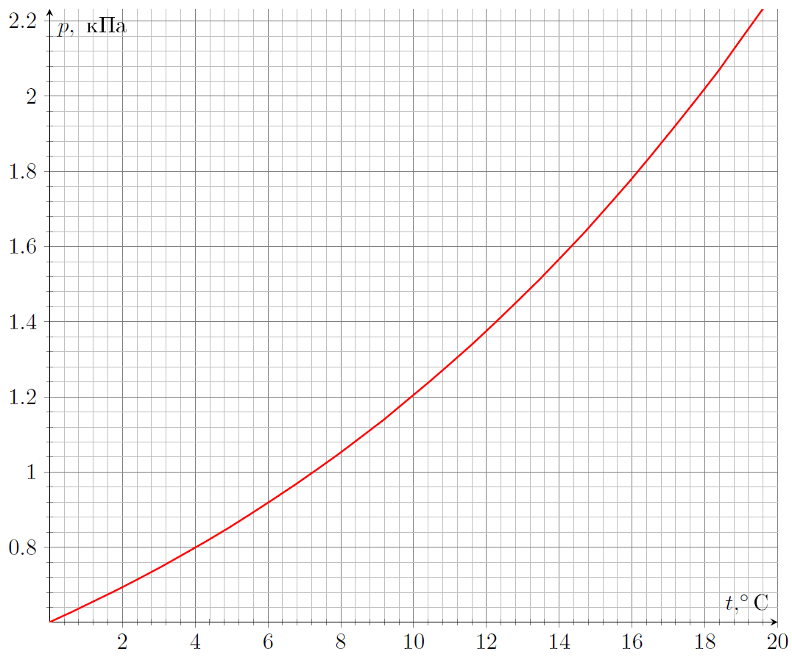
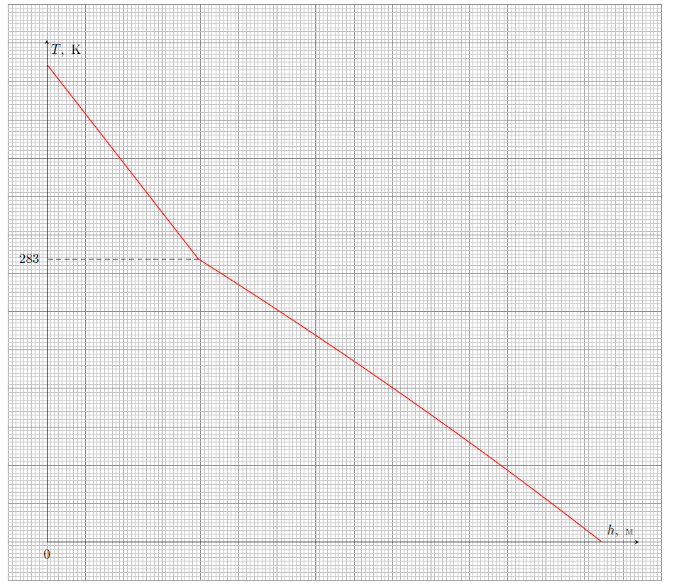

Y22 (2022) — English translation
An adiabatic atmosphere is an atmosphere in equilibrium, in which possible movements of air masses occur without heat exchange with each other. The standard model of the adiabatic atmosphere considers the equilibrium of dry air. In reality, the air contains water vapor, which, upon reaching saturation, condenses. Steam condensation results in the temperature gradient being significantly different from that obtained in the dry air model. Taking into account the content of water vapor in the atmosphere is the basis of this task. In all points of the problem, consider it true for any point in the atmosphere that: 1) the temperatures of air and water vapor are equal; 2) the ratio of water vapor density to air density $\cfrac{\rho_\text{п}}{\rho_\text{в}}=\alpha\ll{1}$. Consider the following data known: 1) free fall acceleration $g=9.8~м/с^2$; 2) atmospheric pressure on the Earth’s surface $p_0=1.01\cdot{10^5}~\text{Па}$; 3) unsaturated water vapor is an ideal triatomic gas with molar mass $\mu_\text{п}=18~г/моль$ and adiabatic exponent $\gamma_\text{п}$; 4) air is an ideal diatomic gas with molar mass $\mu_\text{в}=29~г/моль$ and adiabatic exponent $\gamma_\text{в}$; 5) universal gas constant $R=8.31~Дж/(моль\cdot К)$; 6) the specific heat capacity of water is equal to $c=4200~Дж/(кг\cdot К)$ and does not depend on temperature; 7) the specific heat of vaporization of water at $T_n=273~\text{К}$ is equal to $\lambda_n=2.491\cdot{10^6}~Дж/кг$. 8) a graph of the dependence of water vapor pressure on temperature $p_\text{н.п}(T)$ in the temperature range $273~\text{К}-293~\text{К}$ is shown in the figure below:

Consider an adiabatic atmosphere consisting of dry air. On the Earth's surface the air temperature is $T_0$.
Further, within the framework of this part of the problem, the temperature depends on the height according to the law found in paragraph $\textbf{A1}$. Also, for the purposes of this part of the problem, assume that mechanically water vapor does not interact with air.
Let the relative humidity of vapor $\varphi=\cfrac{p_\text{п}}{p_\text{н.п}}$ on the Earth's surface be equal to $\varphi_0$.
After saturation, the water vapor begins to condense. This significantly distorts the type of dependence $T_\text{в}(h)$ found in point $\textbf{A1}$. Consider that all condensed water vapor falls instantly as precipitation.
To study the condensation of water vapor, it is necessary to take into account that the specific heat of vaporization differs from the value known for $T_n=273~\text{К}$.
Let us consider the air mass $m_\text{в}$, which is in equilibrium. In the volume of air $V_\text{в}$, the ratio of the mass of water vapor in the separated mass of dry air $\alpha=\cfrac{m_\text{п}}{m_\text{в}}$ depends on the height $h$, i.e. $\alpha=\alpha(h)$.
The graph below shows the dependence of the temperature $T$ in the atmosphere on the height $h$ above the Earth's surface. The marking of the coordinate axes is unknown. The break in the graph occurs at temperature $T_1=283~\text{К}$, and the origin of coordinates corresponds to the Earth’s surface (see figure).

Source: https://pho.rs/p/1928